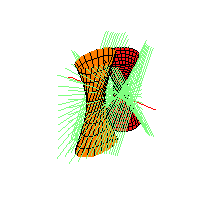
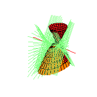
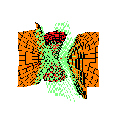
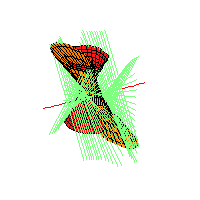

|
Generalize!!!
|


|
11 |
This problem becomes very interesting if we replace the
spheres by
arbitrary quadrics.
Theorem.
Megyesi, S., Theobald
Fixing 2 lines and 1 quadric in general position, the set of quadrics such
that infinitely many transversals to the two lines are
also tangent to the 2 quadrics is a connected curve in the
9-dimensional space of quadrics consisting of 12 plane conics.
Remarkably reducible and remarkably describable!



